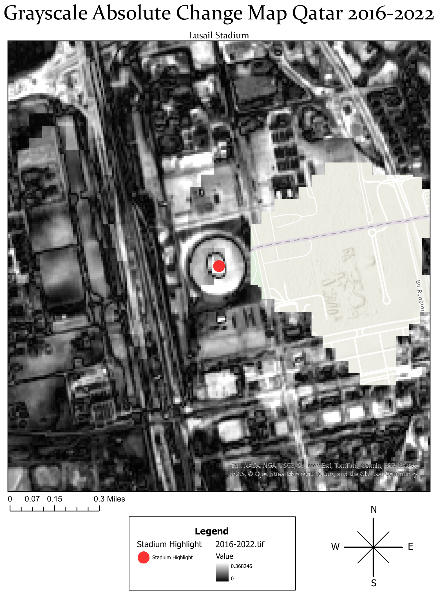
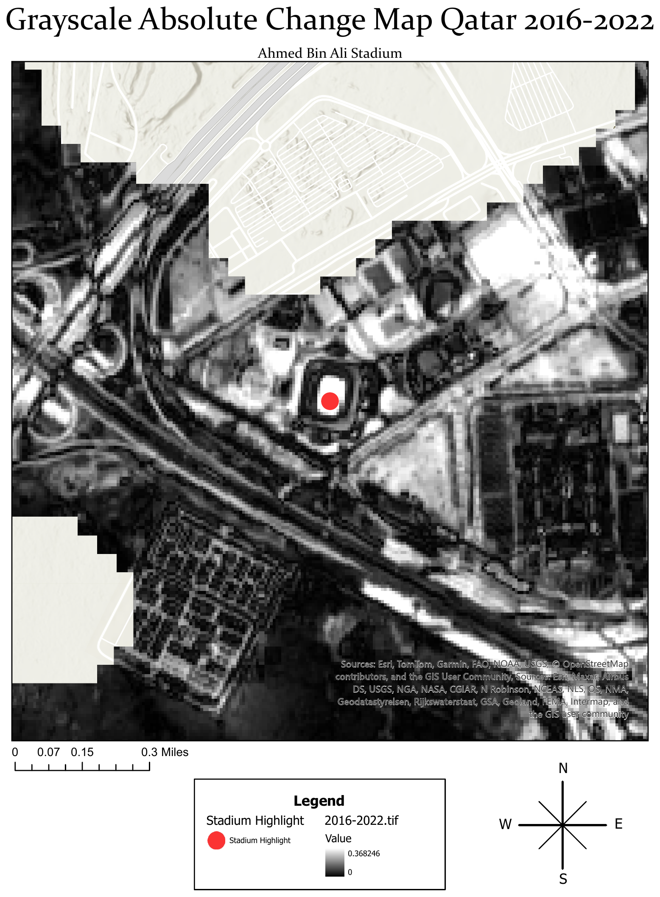

Mapping change around Qatar's World Cup stadiums, before and after the tournament.
Eight stadiums, three satellite snapshots each, and one script that builds and exports a complete map series without touching a single layout by hand. This is as much about automating repeatable cartography as it is about what changed on the ground.

The setup
Qatar built or substantially renovated eight stadiums for the 2022 World Cup, several from scratch. The question here was simple: how much visibly changed at each site between 2016 (pre-construction), 2022 (tournament year), and 2025 (three years on) — and could that be shown consistently across all of them without manually building eight separate maps.
Al Bayt Stadium sits well north of the other seven and would have distorted a shared map extent, so it's excluded from this series and would need its own map on a different scale.
The approach
For each of the two comparison windows (2016→2022 and 2022→2025), the pipeline takes the absolute pixel difference between two Sentinel-2 RGB composites and converts the result to a single grayscale change-intensity band — brighter pixels mean more visible change at that location.
Official stadium locations were pulled directly from an ArcGIS Online feature service rather than digitized by hand, which kept the location data authoritative. Each point was then buffered by 1000 meters, zooming the map series directly to the raw points turned out to be unreliable, so the buffer polygon became the layer the series actually indexes on.
Project Highlight: The Layout Automation
The part worth highlighting isn't the raster math above, it's that all seven stadium maps come out of a single ArcGIS Pro layout, script-driven end to end. One Spatial Map Series, indexed on the buffer layer, iterates through every stadium automatically: the title text dynamically updates to the current stadium's name, the map frame re-centers, and the whole set exports as one 300 dpi PDF in a single run.


A few real implementation snags, and how they got resolved:
- Editing the stadium points' symbology directly kept breaking the series' indexing — solved by duplicating the layer, so one copy handles the visual highlight marker and the original stays untouched for indexing.
- Zooming directly to stadium points was unreliable across runs — replaced with the 1000m buffer approach described above.
- The layout construction (title placement, north arrow, scale bar, legend) was adapted from ESRI's official layout-automation documentation and a course demonstration, then modified for this series.
What this would need to scale further
This runs cleanly across seven stadiums that share a common scale and imagery source. Applying it to a larger or more varied set of sites would mean making the buffer distance and map scale adaptive per site rather than fixed, which the current version doesn't do.